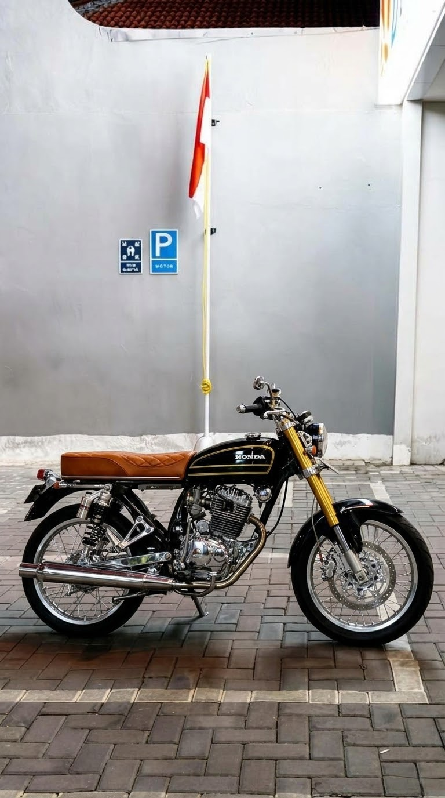
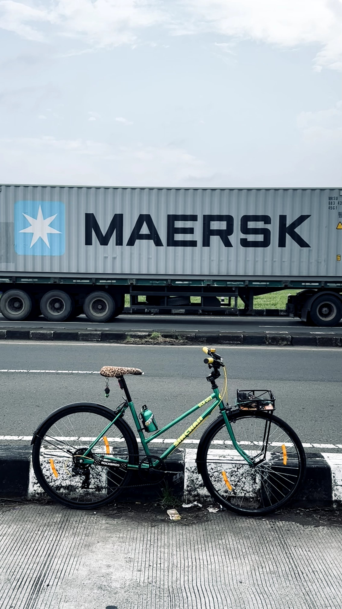
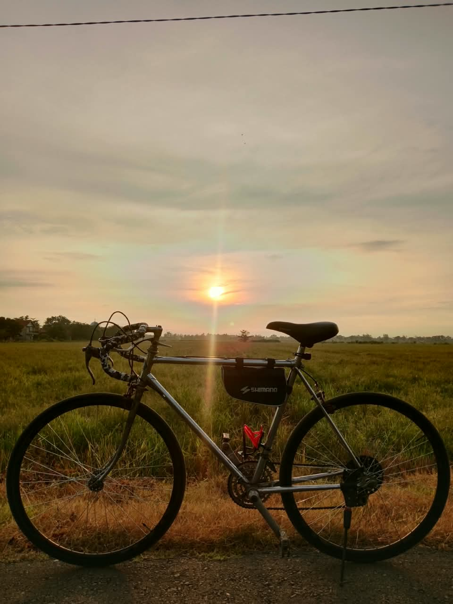

Body Painting Motor
Pengecatan ulang bodi motor untuk memperbarui tampilan kendaraan.
Setiap kendaraan punya karakter. Beko Garage membantu mewujudkannya melalui layanan body painting dan custom painting untuk motor maupun sepeda kalcer.

Beko Garage bergerak di bidang pengecatan ulang dan custom painting kendaraan. Kami melayani motor dan sepeda kalcer dengan pilihan pengerjaan sesuai kebutuhan serta konsep pelanggan.
Mulai dari memperbarui tampilan bodi hingga memilih warna yang lebih personal, setiap pengerjaan diawali dengan memahami kebutuhan pelanggan.
Kenali Beko Garage →Beberapa layanan pengecatan dan peremajaan tampilan kendaraan yang tersedia di Beko Garage.
Pengecatan ulang bodi motor untuk memperbarui tampilan kendaraan.
Custom warna dan tampilan sepeda kalcer sesuai konsep pilihan pelanggan.
Pengecatan ulang velg serta perbaikan tampilan cat kendaraan.
Gambaran umum tahapan. Detail dan estimasi disesuaikan dengan kondisi tiap kendaraan.
Diskusikan jenis kendaraan, warna, dan konsep yang diinginkan.
Pemeriksaan kondisi permukaan dan persiapan bagian yang dikerjakan.
Proses pengecatan sesuai warna dan konsep yang disepakati.
Tahap akhir agar tampilan permukaan lebih merata dan rapi.
Beberapa dokumentasi pengerjaan dari Beko Garage.

Custom Sepeda Kalcer
Hasil Pengerjaan SepedaPunya ide warna atau konsep sendiri? Hubungi Beko Garage untuk mendiskusikan kebutuhan pengecatan kendaraanmu.
Mulai BookingBacaan singkat seputar warna, pengecatan, dan perawatan kendaraan.
Pertimbangan sederhana sebelum memilih warna dan konsep.
Baca artikel →Mengenal tahapan umum sebelum dan sesudah pengecatan.
Baca artikel →Kebiasaan ringan untuk menjaga tampilan cat.
Baca artikel →